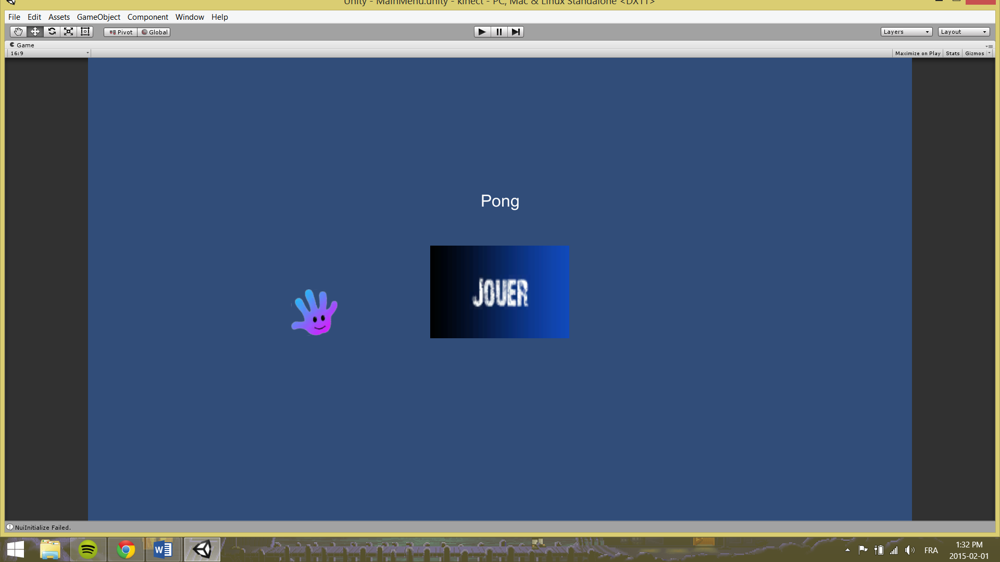
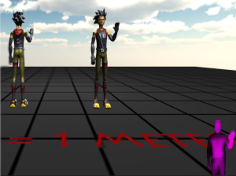

Nous avons ajouté un menu pouvant être contrôlé par les mouvements de la main. Le menu permet de presser un bouton en plaçant un curseur sur celui-ci. Lorsque l’on reste immobile assez longtemps sur le bouton, on le presse et passe à la partie.
Des premières expérimentations ont été effectuées dans Unity pour incorporer les gestuelles dans un projet. Des exemples sont d’ailleurs disponibles sur le « Asset Store ». Le projet principal exploré est celui de Rumen Filkov, un professeur autrichien de l’Université de Vorarlberg des Sciences Appliquées.
Nous avons donc exploré les possibilités de gestion des mouvements, tels que le balayement (ou « swipe ») dans quelconque direction, le saut, l’accroupissement, pousser et tirer. Une gestuelle importante est malheureusement manquante dans le projet, soit celle du « grip » (ou la fermeture et ouverture de la main).
OpenNI est un logiciel open source de type « Middleware ». Il permet l’intégration facilitée de la Kinect (et autres caméras intelligentes) dans un projet. Ici, il peut être utile avec la Kinect, permettant essentiellement de récupérer les fonctionnalités offertes par la caméra dans Unity. Malheureusement, puisque Unity utilise le framework 3.5 de .NET, il ne peut intégrer le SDK de la Kinect, celui-ci étant en 4.0. Il faut donc trouver un moyen de contourner cette limite, OpenNI semblant être une bonne alternative.
NiTE sert à faciliter la reconnaissance des mains, de la figure et de la profondeur et peut être utilisé conjointement avec OpenNI.
Nous explorons donc la possibilité d’utiliser ces « middlewares » dans notre projet, principalement pour la reconnaissance de la gestuelle de type « Grip ».